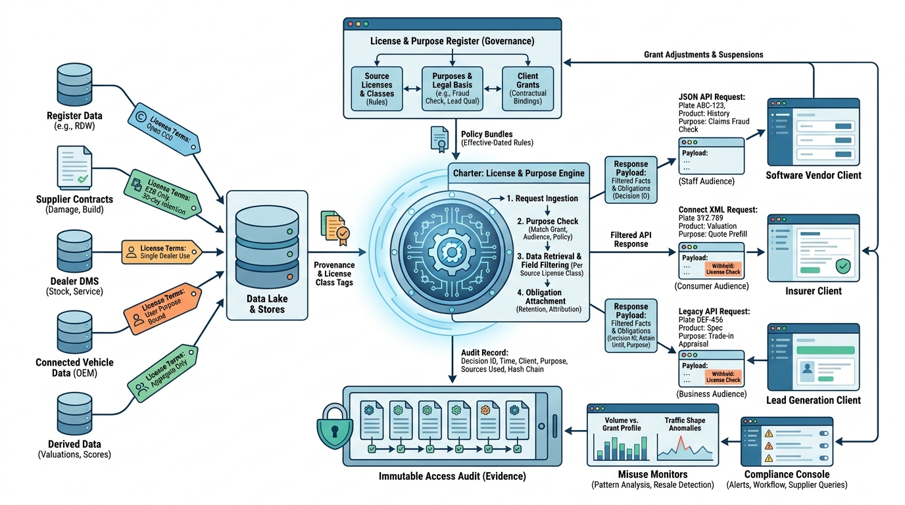

Part V — SAAS: Tenants, Access and the Commercial Model
Allowed to Use It? Data Licensing, Purpose and Governance

Image generated by Google Gemini (gemini-3-pro-image-preview)
Part V — SAAS: Tenants, Access and the Commercial Model

Image generated by Google Gemini (gemini-3-pro-image-preview)